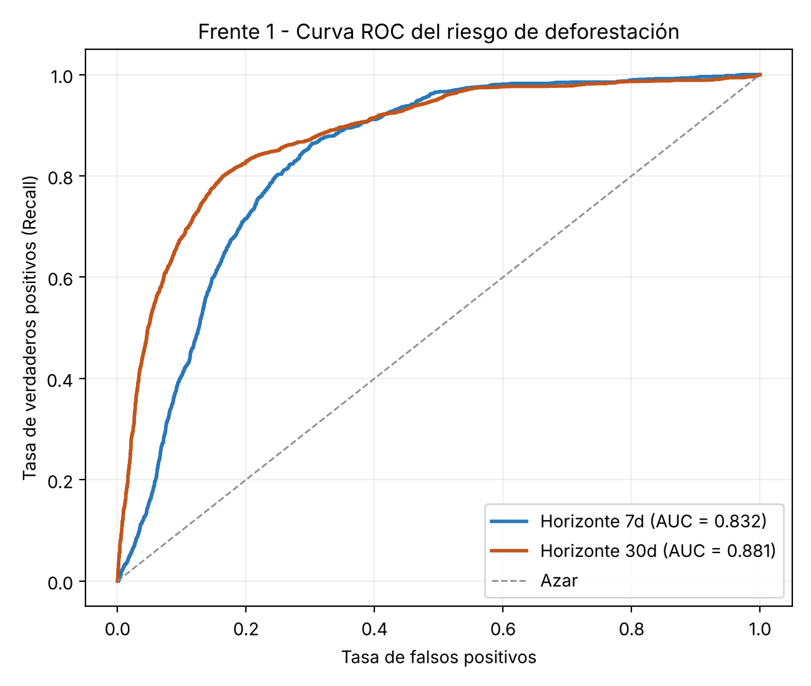
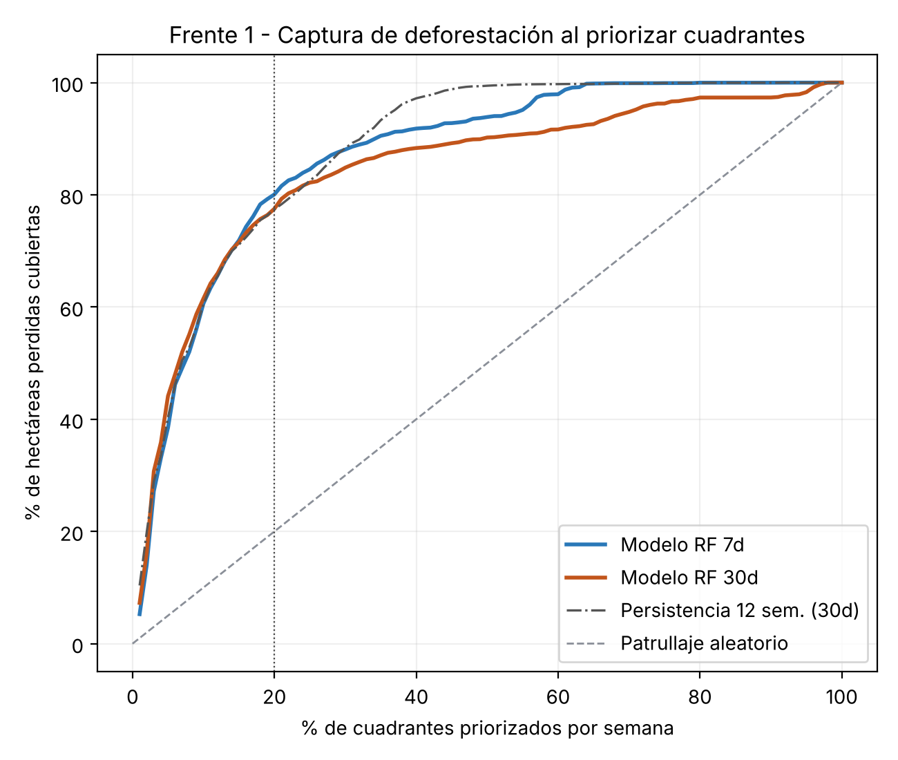
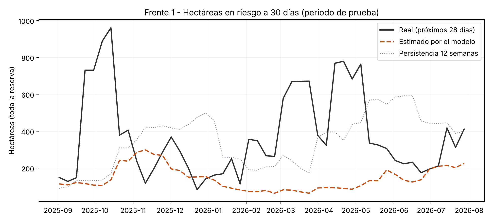
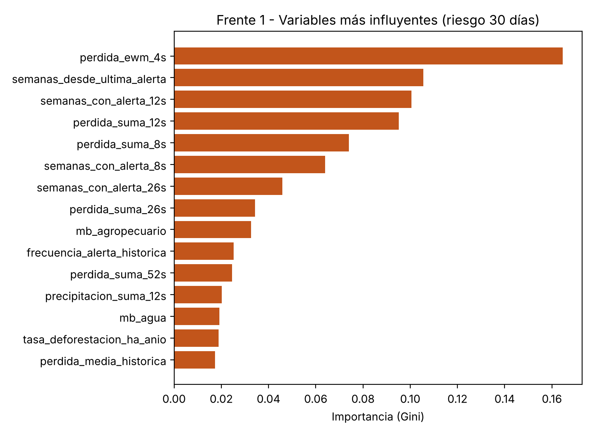
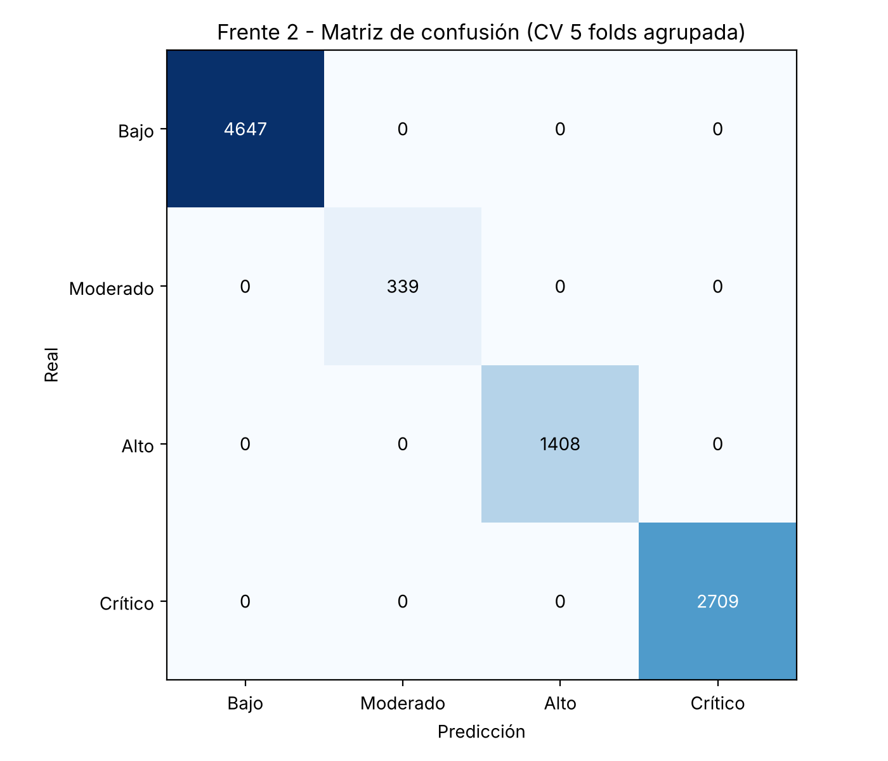

BIODIVERSITY-GUARD Predict - fases 3 y 4 (inicial) de CRISP-DM. Validación temporal sin fuga de datos: entrenamiento con semanas previas y prueba desde 2025-09-02.
30 días: MAE 1.307 ha (ingenuo 1.607) · RMSE 5.786 ha (ingenuo 5.960) ·
Spearman espacial 0.954
7 días: MAE 0.451 ha (ingenuo 0.532) · RMSE 2.698 ha (ingenuo 2.734) ·
Spearman espacial 0.939
| Cuadrante | P(7 días) | P(30 días) | ha en riesgo 30 d | t CO₂ en riesgo | Alerta |
|---|---|---|---|---|---|
| Q211 | 0.81 | 0.95 | 4.36 | 2,219 | Muy alta |
| Q200 | 0.81 | 0.95 | 5.09 | 2,591 | Muy alta |
| Q199 | 0.82 | 0.94 | 8.22 | 4,188 | Muy alta |
| Q192 | 0.82 | 0.94 | 5.42 | 2,761 | Muy alta |
| Q054 | 0.82 | 0.94 | 4.59 | 2,338 | Muy alta |
| Q056 | 0.81 | 0.94 | 3.51 | 1,786 | Muy alta |
| Q212 | 0.81 | 0.94 | 5.44 | 2,771 | Muy alta |
| Q055 | 0.81 | 0.94 | 4.49 | 2,285 | Muy alta |
| Q053 | 0.80 | 0.93 | 7.29 | 3,713 | Muy alta |
| Q198 | 0.79 | 0.93 | 4.85 | 2,469 | Muy alta |
| Q191 | 0.80 | 0.93 | 5.52 | 2,812 | Muy alta |
| Q201 | 0.79 | 0.93 | 3.56 | 1,814 | Muy alta |
| Q087 | 0.79 | 0.93 | 2.47 | 1,259 | Muy alta |
| Q193 | 0.80 | 0.92 | 5.10 | 2,599 | Muy alta |
| Q073 | 0.80 | 0.92 | 5.05 | 2,572 | Muy alta |




